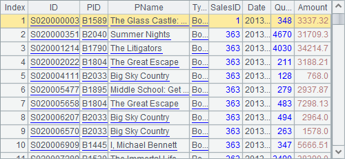
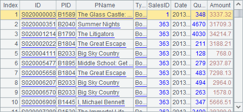
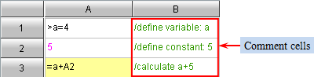
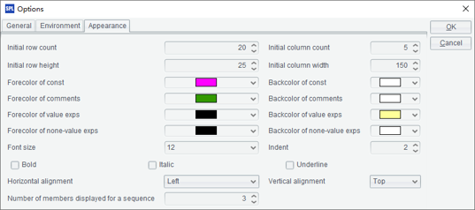
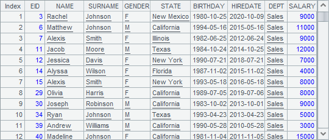

2.4.1 Creation
Creating sequences with constants
To make the viewing convenient, esProc adds an Index column at the leftmost for each display of a sequence or a table sequence. The column isn¡¯t a part of the table structure. Not all the screenshots of sequences or TSeqs in this Tutorial show the Index column.
Bracketing one or more constants with ¡°[]¡± represents a sequence constant. Bracketing an expression with ¡°[]¡± makes a sequence too. For example:
|
|
A |
B |
C |
|
1 |
1 |
red |
2013-06-04 |
|
2 |
2 |
blue |
27.49 |
|
3 |
3 |
yellow |
Tom |
|
4 |
[15.2,b,1] |
=[A1:C3] |
=[3,A4,B4] |
|
5 |
[1,2,3,3] |
[] |
[[]] |
In the cellset, A4, A5, B5 and C5 contain respectively a sequence constant. B4 and C4 contain sequences obtained by computing the expressions.
Members of the sequence in A4 are of various data types, including float, string and integer. Members in B4¡¯s sequences are cell values defined by a range of cells. In C4, members of the sequence contain sequences. And there are identical members in A5¡¯s sequence. The sequences in A4, B4, C4 and A5 respectively are as follows:
 



Let¡¯s look at the values of B5 and C5:

You can see that the value of B5 is an empty sequence, while the value of C5 is a non-empty sequence, whose only member is an empty sequence.
Note: A member of a sequence can be of any data type, including one of the basic types, sequence, record, etc. A sequence whose all members are integers is called an integer sequence.
Creating sequences with functions
|
|
A |
|
1 |
=to(2,6) |
|
2 |
="1,a,b,c".split@c() |
|
3 |
=periods@y("2014-08-10",date(now()),1) |
|
4 |
=file("sales.txt").import@t() |
The code in A1 represents a sequence composed of the consecutive integers from 2 to 6; It can be abbreviated as to(6) if the sequence begins with 1. A2 splits a string to form a sequence. A3 creates a sequence of dates between two given dates according to the time unit of the year. The results of A1, A2 and A3 are as follows:


A4 imports records from a structured text file and creates a sequence. It¡¯s value is as follows:

A sequence whose members are records is a table sequence, which is often used to perform structured data computing. Here the table sequence isn¡¯t our focus. For more information, please refer to Operations on TSeqs and RSeqs.
Creating sequences by computation
In the following cellset, A1 imports the text file sales.txt as a table sequence; A2 retrieves STATE column and generate a sequence; A3 groups the records by STATE and generate a sequene:
|
|
A |
|
1 |
=file("sales.txt").import@t() |
|
2 |
=A1.(STATE) |
|
3 |
=A1.group(STATE) |
After computation, the sequence in A2 is as follows:

The sequence in A3 is as follows:

It can be seen that each member of A3¡¯s sequence is as sequence whose members are records.